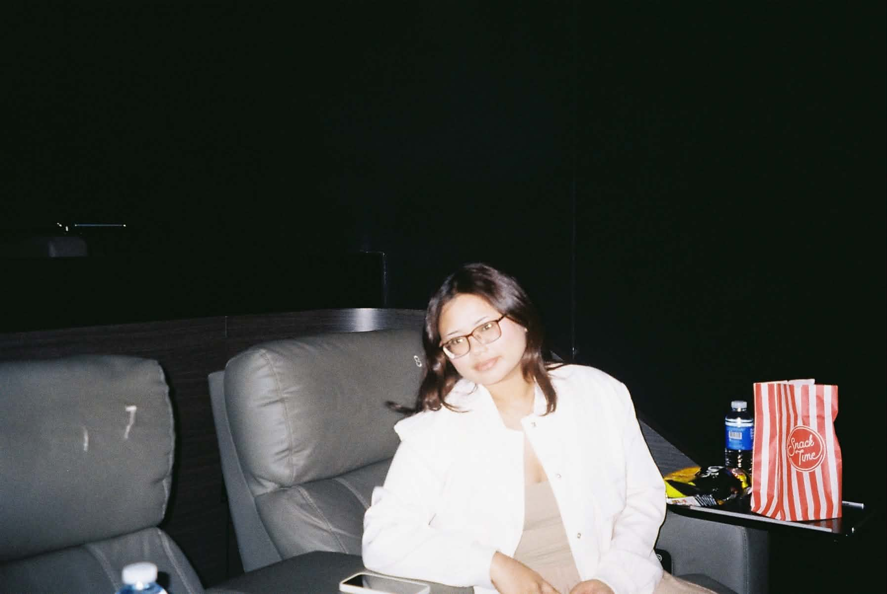
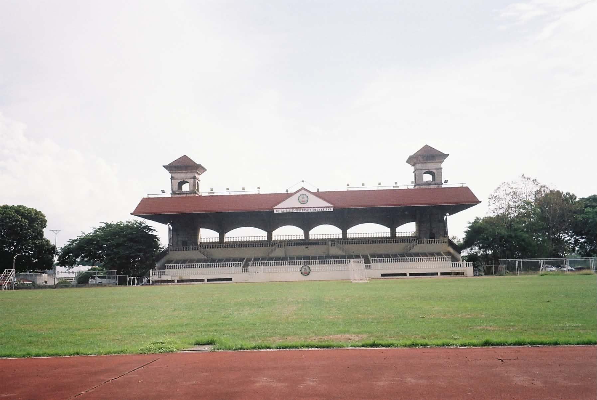
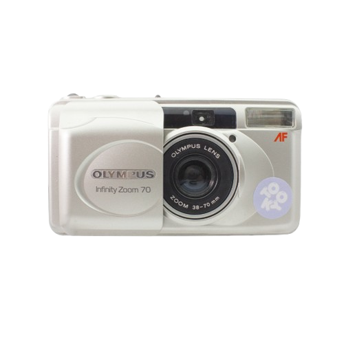
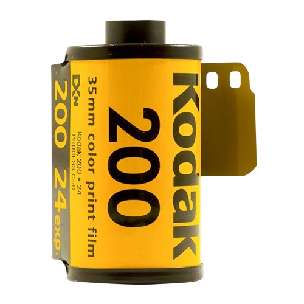

"Very easy to work with"

Hello, I'm
Marie Kazser Bihag
BS Information Technology student specializing in Web Development at De La Salle University - Dasmariñas. I love creating visually appealing, creative websites.
Get to know meA bit about myself
I was born on June 28, 2004. I have a passion for design and creative work, and I enjoy turning ideas into clean, visually appealing websites. Outside of school, I do online marketing in my free time and love watching movies, especially in the cinema.

Interests
Design
Creating visually appealing, creative digital work.
Movies
Watching films, especially on the big screen.
Traveling
Exploring new places and experiencing new things.
Online Marketing
Doing online marketing during my free time.
Film Photography
Taking pictures on a film camera and collecting film rolls.


Testimonials
"She's a very active Teammate!."
"Marie's the teammate you want on a group project with a tight deadline."
"Add testimonial here."